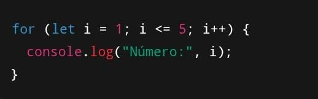

Exemplo


A estrutura FOR é um comando de repetição usado em programação para executar um conjunto de instruções várias vezes de maneira controlada. Ele é composto por três partes principais: a inicialização, que geralmente define uma variável de controle; a condição, que determina até quando o laço deve continuar rodando; e o incremento ou decremento, que altera o valor da variável de controle a cada repetição.
Em linguagens como C, Java e JavaScript, o for é escrito de forma explícita com essas três partes dentro dos parênteses. Por exemplo, você pode inicializar uma variável começando em zero, definir que o laço só vai rodar enquanto essa variável for menor que cinco e, a cada repetição, aumentar o valor dela em um. Isso faz com que o bloco de código seja executado cinco vezes, de forma previsível.